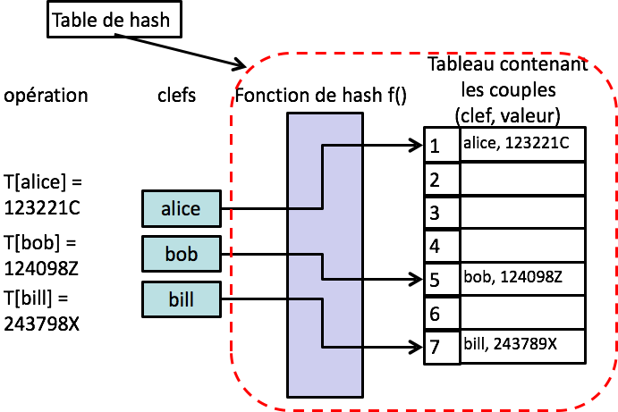

les containers (2/2)¶
les listes ne sont pas la panacée
problème avec les séquences¶
a = range(30000000)
'x' in a # c’est long !
False
a[3] # on peut utiliser un indice entier
3
a = []
# on ne peut pas indexer avec un nom ou autre chose qu'un entier
try:
a['alice'] = 10
except TypeError as e:
print("OOPS", e)
OOPS list indices must be integers or slices, not str
problème avec les séquences…¶
une séquence est une liste ordonnée d’éléments
indexés par des entiersles recherches sont longues O(n)
impossible d’avoir un index autre qu’entier
comment faire, par exemple, un annuaire ?
on voudrait
une insertion, effacement et recherche en O(1)
une indexation par clef quelconque
la solution : les tables de hash¶
une table de hash T indexe des valeurs par des clefs
chaque clef est unique
T[clef] = valeur
insertion, effacement, recherche en O(1)
comment ça marche ?¶

fonction de hachage¶
la fonction de hash f() choisie de façon à ce que
f(key, size) retourne toujours la même valeur
key doit être immutable
minimise le risque de collision
f(key1, size) == f(key2, size)
une bonne façon de minimiser les collisions
est de garantir une distribution uniforme
table de hash et Python¶
le dictionnaire
dictest une table de hash
qui utilise comme clef un objet immutable
et comme valeur n’importe quel objetassociation clé → valeur
l’ensemble
setest une table de hash
qui utilise comme clef un objet immutable
et qui n’associe pas la clef à une valeurnotion d’ensemble mathématique
le set¶
collection non ordonnée d’objets uniques et immutables
utile pour tester l’appartenance
optimisé, beaucoup + rapide que
list
et éliminer les entrées doubles d’une liste
test d’appartenance plus rapide que pour les listes
les sets autorisent les opérations sur des ensembles
union (|), intersection (&), différence (-), etc.
construire un set¶
# attention: {} c'est
# un DICTIONNAIRE vide
set() # ensemble vide
set()
L1 = [1, 2, 3, 1, 1, 6, 4]
S1 = set(L1)
S1
{1, 2, 3, 4, 6}
construire un set…¶
# attention: il faut passer
# à set UN itérable
try:
S = set(1, 2, 3, 4, 5)
except Exception as exc:
print(f"OOPS {type(exc)}")
OOPS <class 'TypeError'>
set et opérateurs¶
S1
{1, 2, 3, 4, 6}
L2 = [3, 4, 1]
S2 = set(L2)
S2
{1, 3, 4}
4 in S2
True
S1 - S2 # différence
{2, 6}
S1 | S2 # union
{1, 2, 3, 4, 6}
S1 & S2 # intersection
{1, 3, 4}
le set: méthodes¶
# ensemble littéral
S3 = {1, 2, 3, 4}
S3
{1, 2, 3, 4}
# ajout d'un élément
S3.add('spam')
S3
{1, 2, 3, 4, 'spam'}
# pas de duplication
# et pas d'ordre particulier
S3.update([10, 11, 10, 11])
S3
{1, 10, 11, 2, 3, 4, 'spam'}
S3.remove(11)
S3
{1, 10, 2, 3, 4, 'spam'}
frozenset¶
un
setest un objet mutablele
frozensetest équivalent mais non mutableun peu comme
listettuplepar exemple pour servir de clé dans un hash
fs = frozenset([1, 2, 3, 4])
# frozenset pas mutable
try:
fs.add(5)
except AttributeError as e:
print("OOPS", e)
OOPS 'frozenset' object has no attribute 'add'
rapide test de performance¶
pour la recherche d’un élément
les sets sont beaucoup plus rapides
import timeit
timeit.timeit(setup= "x = list(range(100000))", stmt = '"c" in x',
number = 300)
0.5046522289999871
timeit.timeit(setup= "x = set(range(100000))", stmt = '"c" in x',
number = 300)
1.0199999962878792e-05
rapide test de performance…¶
même si la liste est très petite
timeit.timeit(setup= "x = list(range(2))", stmt = '"c" in x',
number = 6000000)
0.3508906769999953
timeit.timeit(setup= "x = set(range(2))", stmt = '"c" in x',
number = 6000000)
0.15399595299999191
remarque¶
avec ipython ou dans un notebook, vous pouvez faire vos benchmarks un peu plus simplement
# en Python pur
timeit.timeit(setup= "x = set(range(2))", stmt = '0 in x',
number = 6000000)
0.15091384800001606
# avec ipython / notebook vous pouvez
# faire comme ceci à la place
x = set(range(2))
%timeit -n 6000000 0 in x
38.7 ns ± 1.3 ns per loop (mean ± std. dev. of 7 runs, 6000000 loops each)
le dictionnaire¶
généralisation d’une table de hash
collection non ordonnée d’objets
techniquement, uniquement les pointeurs sont stockés, mais pas une copie des objets
on accède aux objets à l’aide d’une clef (et non d’un indice comme pour une liste)
une clef peut être n’importe quel objet immutable: chaîne, nombre, tuple d’objets immutables…
c’est une structure de données très puissante
le dictionnaire est un type mutable
construire un dictionnaire¶
# ATTENTION : {} n'est pas un ensemble
# les dictionnaires étaient là avant les ensembles !
D = {}
D
{}
# un dictionnaire créé de manière littérale
{ 'douze' : 12, 1: 'un', 'liste' : [1, 2, 3] }
{'douze': 12, 1: 'un', 'liste': [1, 2, 3]}
# une autre façon quand
# les clés sont des chaînes
dict( a = 'A', b = 'B')
{'a': 'A', 'b': 'B'}
# à partir d'une liste de couples
dict( [ ('a', 'A'), ('b', 'B') ] )
{'a': 'A', 'b': 'B'}
utiliser un dictionnaire¶
formes les plus courantes
D[clef]retourne la valeur pour la clefD[clef] = xchange la valeur pour la clefclef in Dteste l’existence de clef dans Dfor k, v in D.items():itère sur Dfor f in D:itère sur les clés
et aussi
del D[clef]supprime la clef et la valeurlen(D)retourne le nombre de clefs dans Dclef not in Dteste la non existenceD.copy()shallow copy de D
d = {'alice': 35, 'bob' : 9, 'charlie': 6}
d
{'alice': 35, 'bob': 9, 'charlie': 6}
# nombre de clés
len(d)
3
# accéder en lecture
d['alice']
35
# test d'appartenance
'bob' in d
True
# accéder en écriture
d['jim'] = 32
d
{'alice': 35, 'bob': 9, 'charlie': 6, 'jim': 32}
# détruire une clé (et la valeur)
del d['jim']
d
{'alice': 35, 'bob': 9, 'charlie': 6}
méthodes sur les dictionnaires¶
D.get(clef)retourne la valeur associée à cette clé si elle est présente,
Nonesinonnotez bien que
D[clef]lance une exception si la clé n’est pas présenteD.get(clef, un_truc)retourneun_trucquand la clé n’est pas présente
# au départ
d
{'alice': 35, 'bob': 9, 'charlie': 6}
# la clé n'est pas présente
try:
d['marc']
except KeyError as e:
print("OOPS", e)
OOPS 'marc'
# on peut utiliser `get` plutôt
# si on préfère un retour de fonction
d.get('marc', '?')
'?'
defaultdict¶
cas d’usage fréquent :
on veut créer un dictionnaire
dont les valeurs sont des listes
on se retrouve à devoir tester
l’existence de la clé à chaque fois
D = {}
for ...:
if x not in D:
D[x] = list()
D[x].append(y)
joli avec un
defaultdict
from collections import defaultdict
D = defaultdict(list)
for ...:
# defaultdict crée automatiquement
# D[x] = list() si x n'est pas présent
D[x].append(y)
from collections import defaultdict
# on peut utiliser le type qu'on veut
dd = defaultdict(set)
# ici on n'a pas encore de valeur
# pour la clé '0' mais defaultdict
# crée pour nous à la volée une liste vide
dd[0].add(1)
dd[0]
{1}
les composantes du dictionnaires¶
D.items()retourne une vue sur les (clef, valeur) deDD.keys()retourne une vue sur les clefs deDD.values()retourne une vue sur les valeurs deD
qu’est-ce qu’une vue ?¶
c’est un objet qui donne une vue dynamique sur un dictionnaire
Ddynamique, c’est-à-dire que si
Dest modifié après la création de la vue
la vue continue de refléter la réalitépermet le test d’appartenance avec
inpermet l’itération (une vue est itérable)
clefs = d.keys()
clefs
dict_keys(['alice', 'bob', 'charlie'])
d['eve'] = 100
d
{'alice': 35, 'bob': 9, 'charlie': 6, 'eve': 100}
clefs
dict_keys(['alice', 'bob', 'charlie', 'eve'])
méthodes sur les dictionnaires - épilogue¶
comme pour toutes les autres types de base de Python
la librairie contient beaucoup d’autres méthodes
il faut aller chercher dans la doc en ligne
https://docs.python.org/3/tutorial/datastructures.html#dictionaries
ordre des éléments dans un dictionnaire¶
remarque d’ordre historique¶
dans les versions avant 3.5, un dictionnaire ne préservait pas l’ordre
ce qui est logique par rapport à la technologie de hachage
mais peut être déroutant pour les débutants, - et les autres aussi parfois…
depuis 3.6, l’ordre de création est préservé
i.e. c’est dans cet ordre que se font les itérations